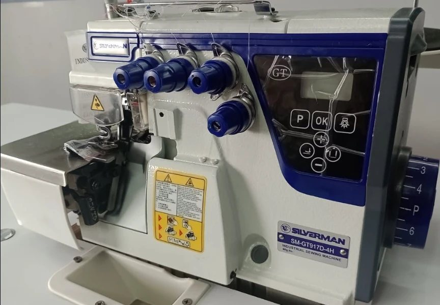
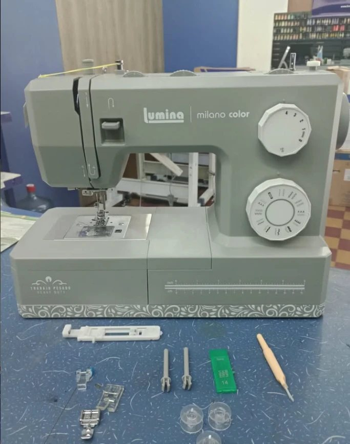
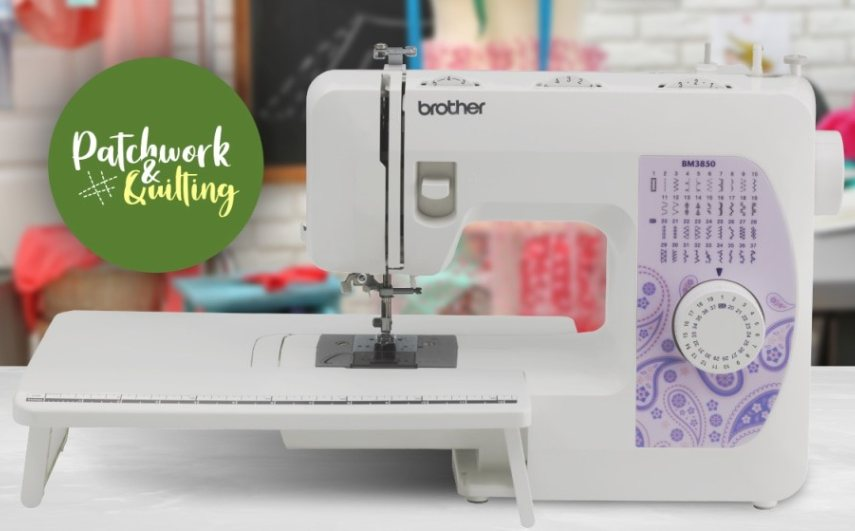
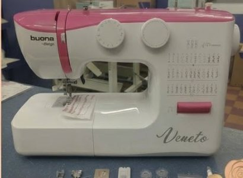
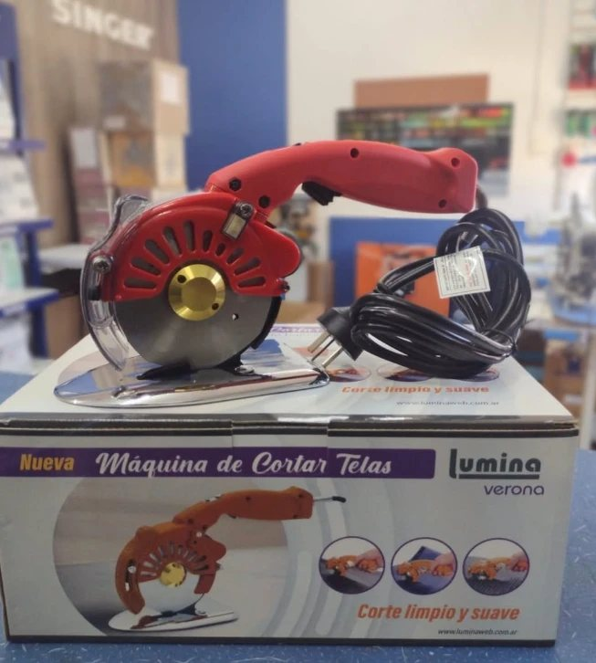

Todo para coser, y quien te la arregle.
Máquinas industriales y familiares, hilos y cortadoras, con asesoramiento y respaldo oficial Brother y Singer. Y si tu máquina falla, la reparamos en nuestro taller.





Así está hoy la vidriera
Qué vas a encontrar
El stock se actualiza desde el local: antes de venir, fijate si lo que buscás está disponible.
Service y reparación de máquinas
Familiares e industriales. Te decimos con honestidad si la máquina necesita arreglo o sólo un service.
- Diagnóstico y presupuesto antes de reparar
- Service de mantenimiento y lubricación
- Repuestos y ajustes
4,7 en Google, con 137 reseñas
Lo que dicen quienes ya nos trajeron su máquina.
Excelente atención y servicio. Siempre llevo mi máquina a hacer un service, son muy honestos en las reparaciones. Recomiendo 100%.
Siempre y como hace años la misma responsabilidad y honestidad con sus clientes.
Excelente atención y muy rápidos para la reparación.
¿Ya nos visitaste? Dejanos tu reseña en Google
¿Buscás una máquina en particular?
Escribinos y te confirmamos stock, precio y formas de pago.
Escribir por WhatsApp